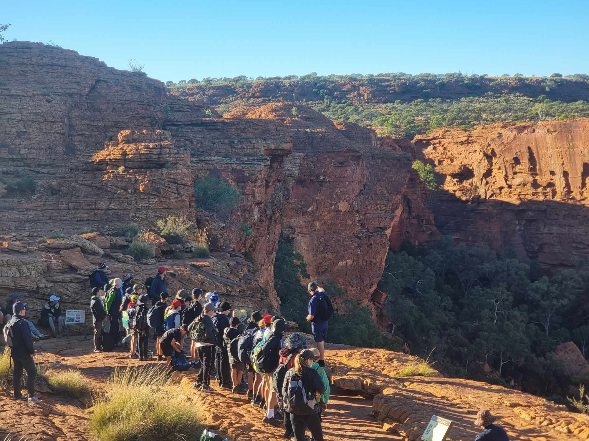
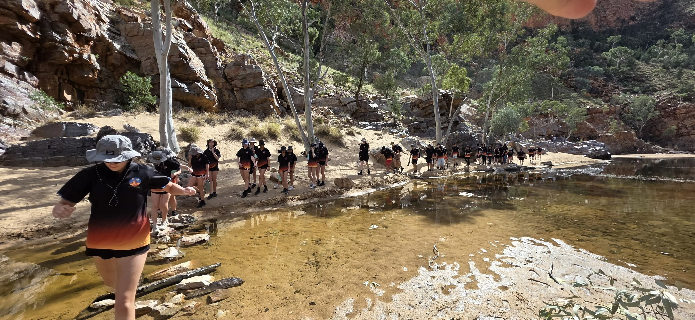
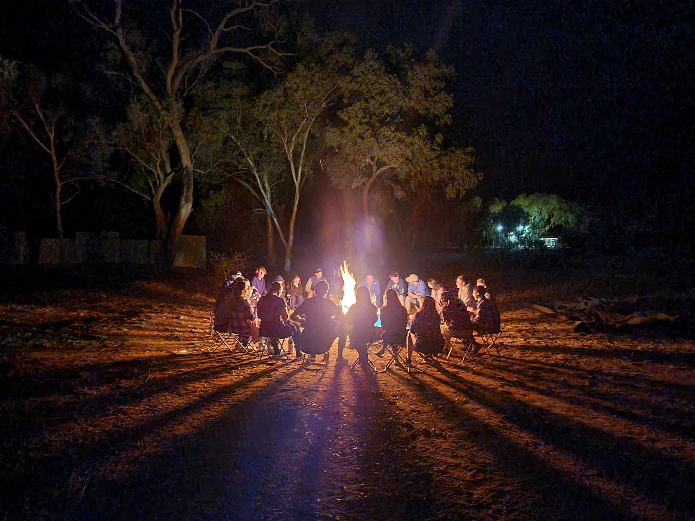

Alice Springs Telegraph Station
This place marks the site of the first European settlement in Alice Springs in 1872.
TOUR OPTIONS
We aim to close the gap between Indigenous and Non-Indigenous Australians through interactive cultural experiences and educational activities.
Our excursions specialise in the areas of Alice Springs, Western MacDonnell Ranges, Uluru and Kata Tjuta, Kings Canyon and its Indigenous communities such as Lilla and Ulpinyali.
We understand every group that travels with us has their own unique requirements. Our standard excursion components can be mixed and matched to suit your specific needs.



Alice Springs is a great place to visit and start your trip. Located in the very heart of Australia, it has a number of interesting attractions that educate students and get them thinking about life in remote Central Australia before heading outback.
This place marks the site of the first European settlement in Alice Springs in 1872.
Get up close with a hands-on demonstration of unique reptiles and learn some first aid at the same time.
Students can watch a birds of prey demonstration and learn about native plants and animals.
Students can learn about an outback icon and its importance for modern rural living.
An ecology and sustainability tour with camping, astronomy and telescopic viewing after dark.
One of Australia's most famous geological and Indigenous cultural visitor attractions, this place is not to be missed for its sheer size, rock formations and changing colours.
Guided base walk of Uluru.
Guided Valley of the Winds hike through Kata Tjuta.
Visit to the Ayers Rock cultural centre.
Optional camel rides through the park grounds.
The Western MacDonnell mountain range is home to spectacular gaps, gorges and areas of cultural significance for Aboriginal people.
A breathtaking waterhole used by locals year round and a beautiful place to relax and swim.
An ancient place where Aboriginal people collected ochre for ceremonial body paint and markings.
A highlight where students can hike the Ghost Gum walk and look for rock wallabies.
Camp at Glen Helen Resort and swim near the gorge cliff walls.
Visit Indigenous communities and see first-hand what life is like in the outback. Students can learn about the culture and history of Luritja country through interactive, guided activities.
Guided base walk of Uluru.
Guided Valley of the Winds hike through Kata Tjuta.
Visit to the Ayers Rock cultural centre.
Optional camel rides through the park grounds.